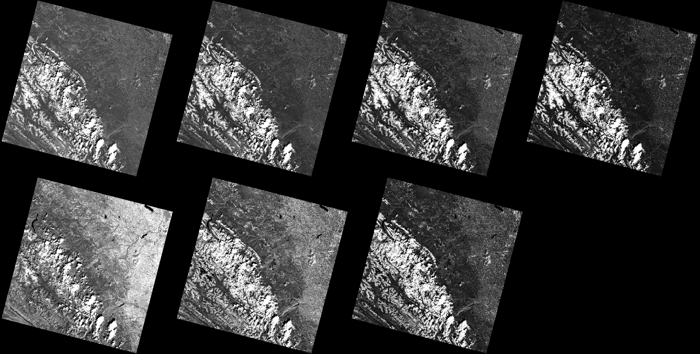

Visualization Example
RemoteSensingToolbox provides a number of utilities for visualizing remote sensing imagery. First, lets load the imagery we want to visualize. We're working with Landsat 8 imagery, so we'll use the Landsat8 constructor to wrap our rasters in the appropriate context. Landsat8 is an instance of AbstractSensor, which allow many methods within RemoteSensingToolbox to infer sensor-specific information by exploiting Julia's multiple dispatch system. The Landsat8 constructor expects a directory storing Landsat 8 raster files with names conforming to the standard specification. If this is not the case, you may construct a Rasters.RasterStack manually and pass it to the constructor instead.
using RemoteSensingToolbox, Images, Rasters
landsat = Landsat8("data/LC08_L2SP_043024_20200802_20200914_02_T1/")Now let's visualize our data to see what we're working with. This is where the power of AbstractSensor can first be demonstrated. To view a true color composite of the data, we need to know the bands corresponding to red, green, and blue. However, it would be tedious to memorize and manually specify this information whenever we want to call a method which relies on a specific combination of bands. Fortunately, all AbstractSensor subtypes know this information implicitly, so all we need to do is pass TrueColor into the visualize method to automatically extract the appropriate bands.
visualize(landsat, TrueColor; upper=0.90)
You may have noticed that we also provided an additional argument upper to the visualize method. This parameter controls the upper quantile to be used when performing histogram stretching to make the imagery more interpretable to humans. This parameter is set to 0.98 by default, but because our scene contains bright clouds, we need to lower this threshold to prevent the image from appearing too dark. Let's try again with another band combination. The Agriculture band comination is commonly used to distinguish regions with healthy vegetation, which appear as various shades of green.
visualize(landsat, Agriculture; upper=0.90)
We can also view a mosaic of all the bands in our image by calling Images.mosaicview.
mosaicview(landsat; upper=0.90, rowmajor=true, ncol=4)
We'll finish this example by demonstrating how easy it is to compute land cover indices with any AbstractSensor subtype. The Modified Normalized Difference Water Index (MNDWI) is an especially popular index, which is used to help distinguish water from land. Here, we visualize both the true color representation and the corresponding MNDWI index.
# AbstractSensors are compatible with all view and index operations supported by Rasters.jl
patch = @view landsat[X(5800:6800), Y(2200:3200)]
# Visualize a true color representation next to the calculated MNDWI
true_color = visualize(patch, TrueColor; upper=0.998)
index = visualize(mndwi(patch))
mosaicview(true_color, index; npad=5, fillvalue=0.0, ncol=2)